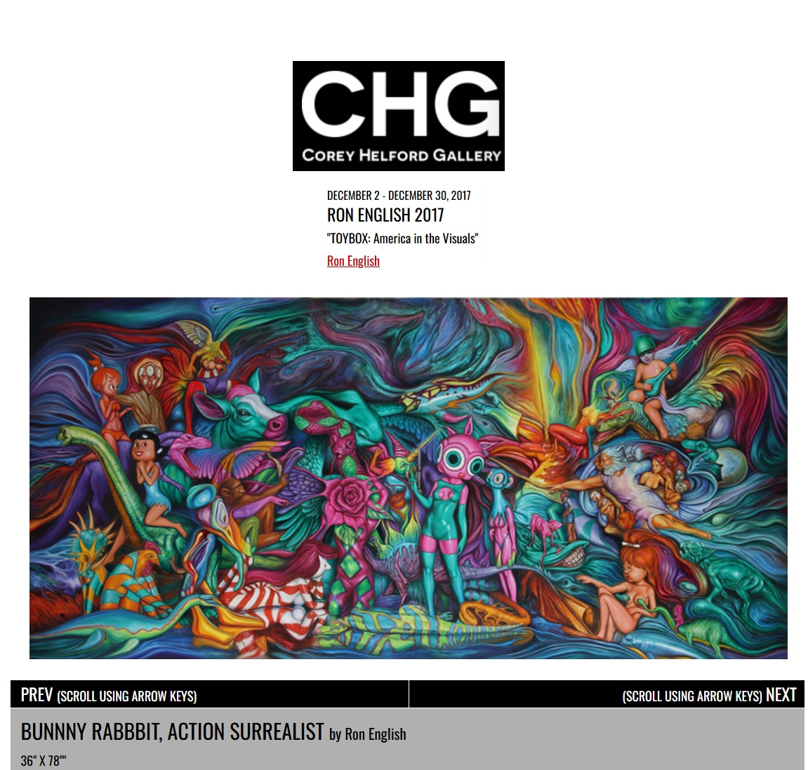

Exhibitions
TOYBOX: America in the Visuals, Corey Helford Gallery, Los Angeles, California, US, December 2, 2017–January 6, 2018.
Living in Delusionville, Mesa Contemporary Arts Museum, Mesa Arts Center, Mesa, Arizona, US, September 9, 2022–January 22, 2023.


Literature
Ron English, Original Grin: The Art of Ron English (Paris: Cernunnos, 2019), p. 381. ISBN 978-2374950938.
Provenance
Artist's personal collection.
Notes
Also known as Bunnny Rabbbit, Action Surrealist, the title used by Corey Helford Gallery.
This work references Michelangelo’s The Creation of Adam.
Additional character references noted for this entry include Peppermint Patty from Peanuts, and Betty Rubble and Wilma Flintstone from The Flintstones.
This image appears as the cover artwork for Callum Berigan’s SoundCloud track House Mix, published January 31, 2025.
This image also appears on VeVe’s digital collectible page for Ron English’s Record #7 - Bunnny’s Rap - Original, listed as a Common, First Edition, Blind Box digital collectible with 1,200 rarity editions, Drop Date September 7, 2025, 08:00am, License: Ron English, Brand: Ron English’s Popaganda, and Series: Delusionville Record S7.
Also known as Bunnny Rabbbit, Action Surrealist, the title used by Corey Helford Gallery.
This work references Michelangelo’s The Creation of Adam.
This image appears as the cover artwork for Callum Berigan’s SoundCloud track House Mix, published January 31, 2025.
This image also appears on VeVe’s digital collectible page for Ron English’s Record #7 - Bunnny’s Rap - Original, listed as a Common, First Edition, Blind Box digital collectible with 1,200 rarity editions, Drop Date September 7, 2025, 08:00am, License: Ron English, Brand: Ron English’s Popaganda, and Series: Delusionville Record S7.
Ancillary Documentation


__p001.jpg?v=20260724071411)





Selected Online Circulation
Selected sources documenting the work’s wider online circulation.